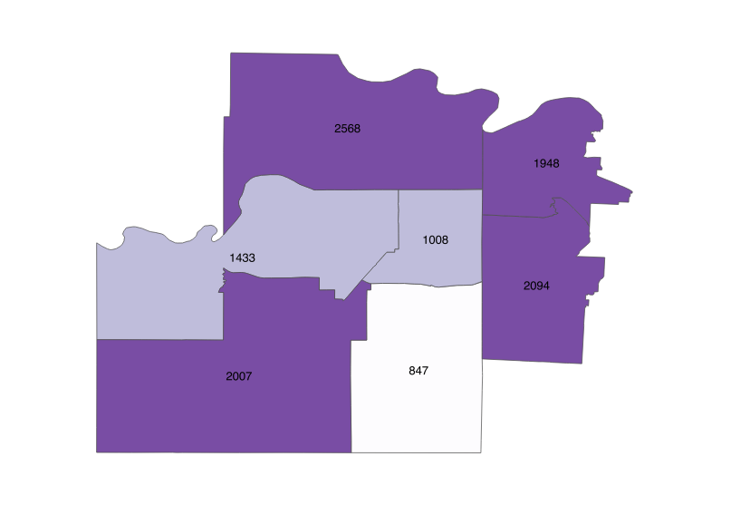
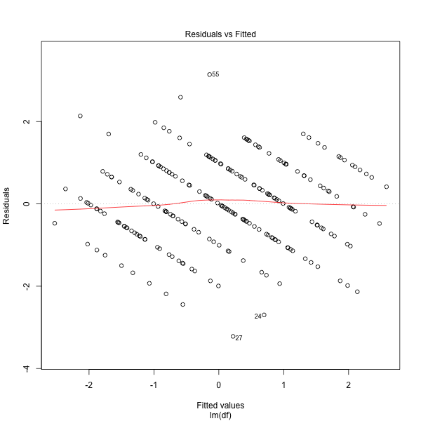

Portfolio
I am a data scientist with a penchant for problems involving geography and language.
Selected Projects
Dental Demographics

Mapping demographic and competitor data to find profitable locations for a dental practice
Predicting House Prices

Predicting the sale price of houses given their dimensions, year of construction, and other characteristics
Exploring Subreddit Networks

Visualizing and analyzing networks of topic-related messageboards on reddit.com
Student Satisfaction Regression

Multiple linear regression of factors leading to students' satisfaction with their psychology degree